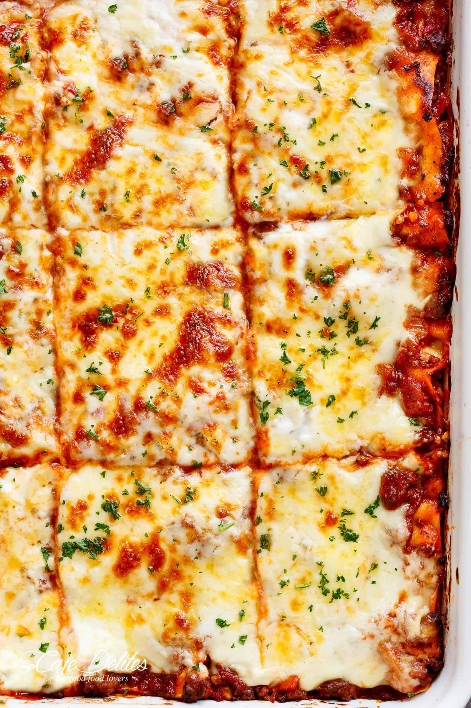

The number one guide in making the best food!
Today's main recipe is... lasagne!
A classic recipe of one of the most loved foods in the world. The ultimate comfort food = homemade lasagna.
Family and friends gather around the dinner table at any time for this lasagna recipe. A big warm comforting hug
within layers of pasta, tomato sauce, white sauce and melted cheese!

Ingredients needed:
- 1 tb. Olive oil
- 1 onion, finely chopped
- 1 carrot, finely diced
- 4 garlic cloves, minced
- 700 grams ground beef mince
- 700 grams Passata
- 410 grams crushed tomatoes
- 2 vegetable or beef bouillon cubes, crushed
- 4 tb. butter
- 1/4 cup flour, all purpose or plain
- 3 1/2 cups milk
- 1 cup fresh shredded parmesan
- 375 grams fresh lasagne sheets
- 500 grams fresh mozzarella cheese, shredded
- 2 tb. finely chopped parsely
Method:
- Heat oil in a large pot over medium heat, then add in the onion and carrots and cook for 8-10 minutes, or
until softened. Add in the garlic and sauté for about 1 minute, until fragrant.
- Add beef and cook while breaking it up with the end of your spoon, until browned.
- Pour in the Passata, crushed tomatoes, tomato paste, crushed bouillon and dried herbs. Mix well to
combine and bring to a gentle simmer. Season with desired amount of salt and pepper (I use about 3/4
teaspoon each) and sugar if needed. Cover and cook for about 20-30 minutes, occasionally mixing, until
the sauce has thickened slightly and meat is tender.
- Adjust salt, pepper and dried herbs to your taste.
- In a large pot, melt butter over medium heat. Remove from hot plate; add the flour and whisk for about 30
seconds,
or until well blended.
- Place pot back onto stove, reduce heat down to low and slowly whisk in 1 cup of the milk until well
combined. Once well blended, add the remaining milk in 1 cup increments, mixing well after each
addition,
until all the milk is used and sauce is free from lumps. If the sauce is too thick, add a little more milk
until it turns into a nice and creamy consistency.
- Increase heat to medium and continue cooking sauce while stirring occasionally until it thickens (about 6-7
minutes)
and coats the back of your wooden spoon.
- Add in the parmesan cheese and remove from heat. Season with salt and pepper and mix until the cheese is
melted through.
- Spoon about 1 cup of meat sauce on the base of a 9x13-inch baking dish,
then cover with lasagna sheets.
(Trim sheets to fit over the meat if needed.) Layer with 2 cups of meat sauce (or enough to cover pasta),
1
cup of white sauce and half of the mozzarella cheese. Repeat layers (leaving the remaining cheese for the
top).
- Pour the remaining meat sauce and white sauce over the last layer of lasagna sheets and top
with the
remaining mozzarella cheese. Bake for 25 minutes or until golden and bubbling.
- Garnish with parsley and let stand for about 10 minutes before slicing and serving.
And that's it! Now you can go and enjoy your indulging slice of perfect lasagne!
Want to see more recipes? Check out our tomato soup!